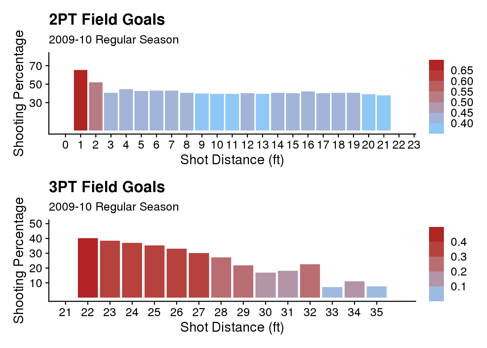
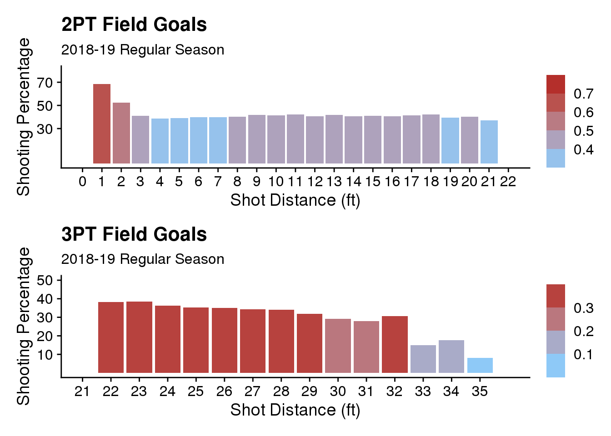
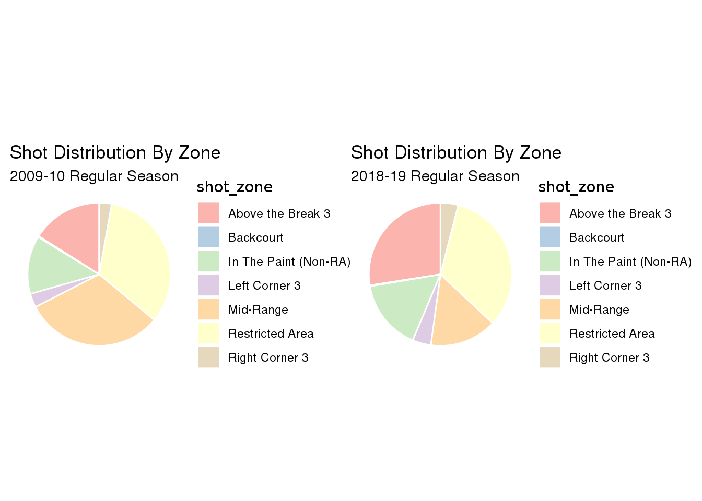
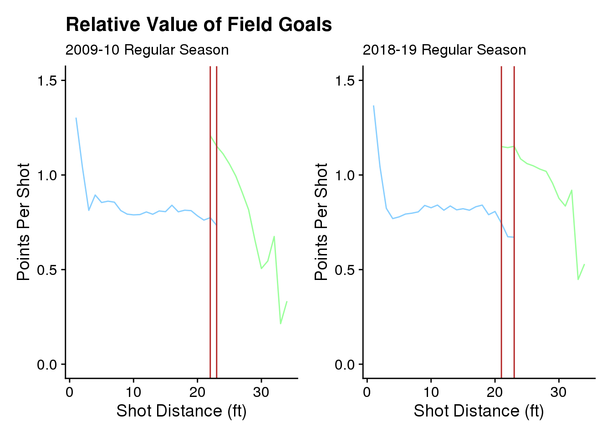
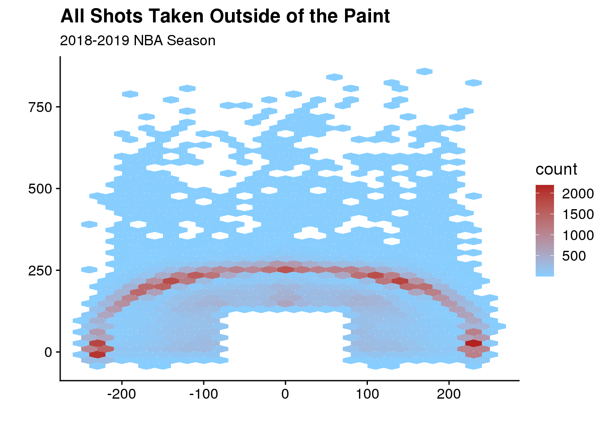
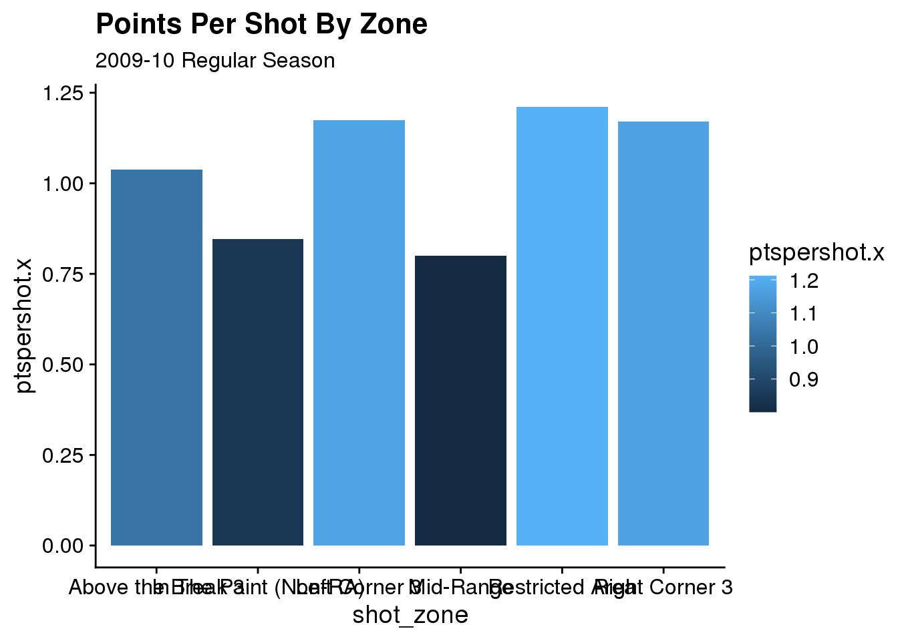
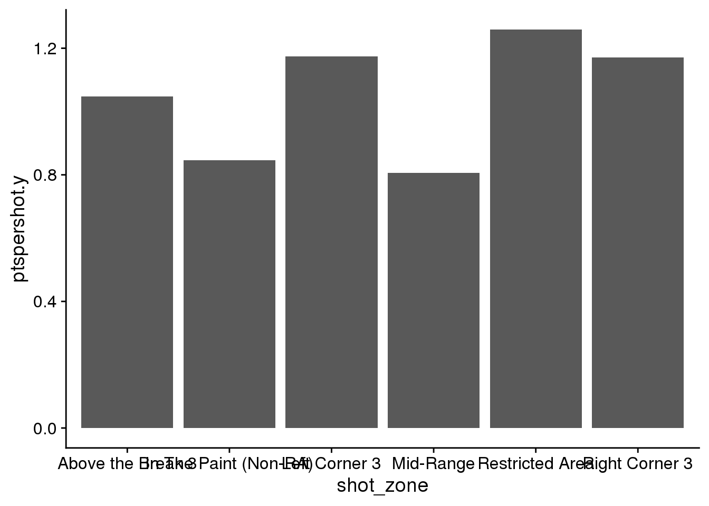

Nearly all sports have one thing in common; a final score. It’s the most important number, and some say it’s the only one that matters. In spite of that view, many sports have been flipped on their head by a proper understanding of key numbers. My mind automatically drifts to the story told in Micheal Lewis’ “Moneyball”. In which, the MLB was revolutionized by the analytical ideas of a few baseball black sheep. Like many other leagues, the NBA was not immune to this revolution. Economics and statistics have transformed the league. With a focus on reaching maximum point scoring efficiency. The comprehensive story is beautifully told in Kirk Goldsberry’s book “Sprawlball”. The novel shows how quantitative analysis pushed all NBA teams to dramatically change their strategy. My analysis will ultimately determine if better “Sprawlball” execution results in more games won. This will be achieved through exploration of key questions.
To examine this topic I collected advanced shot data directly form the NBA Stats website. I made use of a python web-scraper that included the requests and json modules. A tutorial was used to help build the web-scraper. (If you’d like to try for yourself the link is posted below.) The data includes every shot taken during the 2009-2010 and the 2018-2019 NBA Regular Seasons. It includes an impressive amount of variables that describe everything you could need.
shots10 <- read_csv("data/nba_shots_2010.csv")
shots19 <- read_csv("data/nba_shots_2019.csv")glimpse(shots10)## Observations: 200,966
## Variables: 24
## $ GRID_TYPE <chr> "Shot Chart Detail", "Shot Chart Detail", "Shot C…
## $ GAME_ID <chr> "0020900001", "0020900001", "0020900001", "002090…
## $ GAME_EVENT_ID <dbl> 2, 3, 5, 6, 7, 9, 10, 12, 14, 16, 18, 23, 25, 27,…
## $ PLAYER_ID <dbl> 2760, 951, 2544, 708, 2760, 2544, 951, 2760, 2590…
## $ PLAYER_NAME <chr> "Anderson Varejao", "Ray Allen", "LeBron James", …
## $ TEAM_ID <dbl> 1610612739, 1610612738, 1610612739, 1610612738, 1…
## $ TEAM_NAME <chr> "Cleveland Cavaliers", "Boston Celtics", "Clevela…
## $ PERIOD <dbl> 1, 1, 1, 1, 1, 1, 1, 1, 1, 1, 1, 1, 1, 1, 1, 1, 1…
## $ MINUTES_REMAINING <dbl> 11, 11, 11, 10, 10, 10, 9, 9, 9, 9, 8, 8, 8, 8, 8…
## $ SECONDS_REMAINING <dbl> 31, 12, 3, 46, 26, 6, 45, 36, 27, 6, 54, 35, 15, …
## $ EVENT_TYPE <chr> "Made Shot", "Missed Shot", "Made Shot", "Made Sh…
## $ ACTION_TYPE <chr> "Step Back Jump shot", "Jump Shot", "Jump Shot", …
## $ SHOT_TYPE <chr> "2PT Field Goal", "2PT Field Goal", "2PT Field Go…
## $ SHOT_ZONE_BASIC <chr> "In The Paint (Non-RA)", "Mid-Range", "Mid-Range"…
## $ SHOT_ZONE_AREA <chr> "Center(C)", "Right Side(R)", "Right Side Center(…
## $ SHOT_ZONE_RANGE <chr> "8-16 ft.", "16-24 ft.", "16-24 ft.", "8-16 ft.",…
## $ SHOT_DISTANCE <dbl> 9, 22, 23, 8, 7, 1, 7, 3, 15, 8, 23, 16, 1, 0, 0,…
## $ LOC_X <dbl> 36, 214, 129, 36, 26, -2, 69, 1, -11, 70, -229, 1…
## $ LOC_Y <dbl> 93, 83, 194, 75, 75, 12, 28, 34, 156, 50, 37, 39,…
## $ SHOT_ATTEMPTED_FLAG <dbl> 1, 1, 1, 1, 1, 1, 1, 1, 1, 1, 1, 1, 1, 1, 1, 1, 1…
## $ SHOT_MADE_FLAG <dbl> 1, 0, 1, 1, 1, 1, 0, 0, 1, 0, 1, 0, 0, 0, 1, 1, 1…
## $ GAME_DATE <dbl> 20091027, 20091027, 20091027, 20091027, 20091027,…
## $ HTM <chr> "CLE", "CLE", "CLE", "CLE", "CLE", "CLE", "CLE", …
## $ VTM <chr> "BOS", "BOS", "BOS", "BOS", "BOS", "BOS", "BOS", …My datasets for this analysis contain over 400,000 individual shots taken in the National Basketball Association during the 2009-2010, and 2018-2019 Regular Seasons. The data is stored in the nba_shots_2010.csv and the nba_shots_2019.csv. The 2010 data consists of 200,966 observations of 24 variables. The 2019 data consists of 219,458 observations and 24 variables. The variables in each dataset are the same. GRID_TYPE is negligible, it is a class character with one unique value. GAME_ID, GAME_EVENT_ID, PLAYER_ID, and TEAM_ID are all either characters or numerics with the purpose of identifying some individual or event. PLAYER_NAME and TEAM_NAME are more useful versions of the ID variables, being stored as human readable characters. PERIOD identifies the current period when a given shot was taken, it is stored as a numeric. MINUTES_REMAINING and SECONDS_REMAINING, in conjunction, tell the amount of time remaining when the shot was taken and are stored as numerics. EVENT_TYPE tells whether the shot was a Missed Shot or a Made Shot and is stored as a character string. ACTION_TYPE describes the type of shot being taken, there are 45 different types of shots stored in the data, and they are stored as characters. Wow! SHOT_TYPE characters tell us whether a shot was a 3PT Field Goal, or a 2PT Field Goal. SHOT_ZONE_BASIC, SHOT_ZONE_AREA, and SHOT_ZONE_DISTANCE quantify where the shot was taken in 7, 6, and 5 zones respectively. These variables are stored as character strings. LOC_X and LOC_Y are powerful variables that plot a shot’s location on a coordinate plane. They are numeric, as are SHOT_ATTEMPTED_FLAG, and SHOT_MADE_FLAG which are binary numerics and indicate the same information as other statistics. GAME_DATE is stored as a numeric and gives the game date without punctuation. HTM, and VTM give information about the respective home and away teams.
shots10_2pt <- shots10 %>%
select(SHOT_DISTANCE, SHOT_TYPE, SHOT_MADE_FLAG, SHOT_ATTEMPTED_FLAG) %>%
filter(SHOT_TYPE == "2PT Field Goal") %>%
group_by(SHOT_DISTANCE) %>%
summarise(shot_percentage_by_distance =
sum(SHOT_MADE_FLAG) / sum(SHOT_ATTEMPTED_FLAG),
points_per_shot =
2 * shot_percentage_by_distance,
.groups = "keep")
shots10_3pt <- shots10 %>%
select(SHOT_DISTANCE, SHOT_TYPE, SHOT_MADE_FLAG, SHOT_ATTEMPTED_FLAG) %>%
filter(SHOT_TYPE == "3PT Field Goal") %>%
group_by(SHOT_DISTANCE) %>%
summarise(shot_percentage_by_distance =
sum(SHOT_MADE_FLAG) / sum(SHOT_ATTEMPTED_FLAG),
points_per_shot =
3 * shot_percentage_by_distance,
.groups = "keep")
shots19_2pt <- shots19 %>%
select(SHOT_DISTANCE, SHOT_TYPE, SHOT_MADE_FLAG, SHOT_ATTEMPTED_FLAG) %>%
filter(SHOT_TYPE == "2PT Field Goal") %>%
group_by(SHOT_DISTANCE) %>%
summarise(shot_percentage_by_distance =
sum(SHOT_MADE_FLAG) / sum(SHOT_ATTEMPTED_FLAG),
points_per_shot =
2 * shot_percentage_by_distance,
.groups = "keep")
shots19_3pt <- shots19 %>%
select(SHOT_DISTANCE, SHOT_TYPE, SHOT_MADE_FLAG, SHOT_ATTEMPTED_FLAG) %>%
filter(SHOT_TYPE == "3PT Field Goal") %>%
group_by(SHOT_DISTANCE) %>%
summarise(shot_percentage_by_distance =
sum(SHOT_MADE_FLAG) / sum(SHOT_ATTEMPTED_FLAG),
points_per_shot =
3 * shot_percentage_by_distance,
.groups = "keep")
# 2010 shots
shots10_pct <- shots10_2pt %>%
full_join(shots10_3pt, by = "SHOT_DISTANCE")
# 2019 shots
shots19_pct <- shots19_2pt %>%
full_join(shots19_3pt, by = "SHOT_DISTANCE")After examining the dataset, lets draw out some information and plot it over SHOT_DISTANCE by season. The code chunk above’s purpose is to efficiently store new variables that I created. These variables are shot percentage by distance, and points per shot by distance. Both of these values are critical in explaining how “Sprawlball” works and why it is so effective.
# 2010 EDA1
#NOTES
#invvestigate labels
#combine charts?
N1 <- (0:23)
N2 <- c(10, 30, 50, 70)
plot1 <- ggplot(shots10_pct,
aes(x = SHOT_DISTANCE,
y = shot_percentage_by_distance.x * 100,
fill = shot_percentage_by_distance.x)) +
geom_bar(stat = "identity") +
labs(title = "2PT Field Goals",
subtitle = "2009-10 Regular Season") +
scale_x_continuous(name = "Shot Distance (ft)",
breaks = N1,
limits = c(0, 22)) +
scale_y_continuous(name = "Shooting Percentage",
breaks = N2,
limits = c(0, 80)) +
scale_fill_binned(low="skyblue1", high="firebrick") +
theme(legend.title = element_blank())
N3 <- (21:35)
N4 <- c(10, 20, 30, 40, 50)
plot2 <- ggplot(shots10_pct,
aes(x = SHOT_DISTANCE,
y = shot_percentage_by_distance.y * 100,
fill = shot_percentage_by_distance.y)) +
geom_bar(stat = "identity") +
labs(title = "3PT Field Goals",
subtitle = "2009-10 Regular Season") +
scale_x_continuous(name = "Shot Distance (ft)",
breaks = N3,
limits = c(21, 36)) +
scale_y_continuous(name = "Shooting Percentage",
breaks = N4,
limits = c(0, 50)) +
scale_fill_binned(low = "skyblue1", high = "firebrick") +
theme(legend.title = element_blank())
plot1 / plot2
N1 <- (0:22)
N2 <- c(30, 50, 70)
plot1 <- ggplot(shots19_pct,
aes(x = SHOT_DISTANCE,
y = shot_percentage_by_distance.x * 100,
fill = shot_percentage_by_distance.x)) +
geom_bar(stat = "identity") +
labs(title = "2PT Field Goals",
subtitle = "2018-19 Regular Season") +
scale_x_continuous(name = "Shot Distance (ft)",
breaks = N1,
limits = c(0, 22)) +
scale_y_continuous(name = "Shooting Percentage",
breaks = N2,
limits = c(0, 80)) +
scale_fill_binned(low="skyblue1", high="firebrick") +
theme(legend.title = element_blank())
N3 <- (21:35)
N4 <- c(10, 20, 30, 40, 50)
plot2 <- ggplot(shots19_pct,
aes(x = SHOT_DISTANCE,
y = shot_percentage_by_distance.y * 100,
fill = shot_percentage_by_distance.y)) +
geom_bar(stat = "identity") +
labs(title = "3PT Field Goals",
subtitle = "2018-19 Regular Season") +
scale_x_continuous(name = "Shot Distance (ft)",
breaks = N3,
limits = c(21, 36)) +
scale_y_continuous(name = "Shooting Percentage",
breaks = N4,
limits = c(0, 50)) +
scale_fill_binned(low = "skyblue1", high = "firebrick") +
theme(legend.title = element_blank())
plot1 / plot2
These plots are meant to look at the problem from a very basic level. However, already we see relationships forming in the data. Those with a keen eye will notice that there is not a significant decrease in shot percentage from once you cross the 3pt line at roughly 22ft. Players are generally consistent when shooting from about 3-25 ft. This fact will give rise to extremely important information in the data analysis section.
# percentage of shots by area
N5 <- length(shots10$SHOT_ATTEMPTED_FLAG)
N6 <- length(shots19$SHOT_ATTEMPTED_FLAG)
# function to count shots by zone
shot_counter <- function(x, y, z) {
a <- x %>%
select(SHOT_ZONE_BASIC) %>%
filter(SHOT_ZONE_BASIC == y)
b <- length(a$SHOT_ZONE_BASIC)
c <- b / z
return(c)
}
# percent of shots by area 2010
pt10 <- shot_counter(shots10, "In The Paint (Non-RA)", N5)
ra10 <- shot_counter(shots10, "Restricted Area", N5)
mr10 <- shot_counter(shots10, "Mid-Range", N5)
lc10 <- shot_counter(shots10, "Left Corner 3", N5)
ab10 <- shot_counter(shots10, "Above the Break 3", N5)
rc10 <- shot_counter(shots10, "Right Corner 3", N5)
bc10 <- shot_counter(shots10, "Backcourt", N5)
# percent of shots by area 2019
pt19 <- shot_counter(shots19, "In The Paint (Non-RA)", N6)
ra19 <- shot_counter(shots19, "Restricted Area", N6)
mr19 <- shot_counter(shots19, "Mid-Range", N6)
lc19 <- shot_counter(shots19, "Left Corner 3", N6)
ab19 <- shot_counter(shots19, "Above the Break 3", N6)
rc19 <- shot_counter(shots19, "Right Corner 3", N6)
bc19 <- shot_counter(shots19, "Backcourt", N6)
# df for 2010 plot
pie_dat10 <- data.frame(
shot_zone = c("In The Paint (Non-RA)",
"Restricted Area",
"Mid-Range",
"Left Corner 3",
"Above the Break 3",
"Right Corner 3",
"Backcourt"),
percent = c(pt10, ra10, mr10, lc10, ab10, rc10, bc10)
)
# df for 2019 plot
pie_dat19 <- data.frame(
shot_zone = c("In The Paint (Non-RA)",
"Restricted Area",
"Mid-Range",
"Left Corner 3",
"Above the Break 3",
"Right Corner 3",
"Backcourt"),
percent = c(pt19, ra19, mr19, lc19, ab19, rc19, bc19)
)plot3 <- ggplot(pie_dat10, aes(x="", y = percent, fill = shot_zone)) +
geom_bar(stat = "identity", width = 3, color = "white") +
coord_polar("y", start=0) +
theme_void() +
labs(title = "Shot Distribution By Zone", subtitle = "2009-10 Regular Season") +
theme(legend.title = element_text("Shot Zone")) +
scale_fill_brewer(palette="Pastel1")
plot4 <- ggplot(pie_dat19, aes(x="", y = percent, fill = shot_zone)) +
geom_bar(stat = "identity", width = 3, color = "white") +
coord_polar("y", start=0) +
theme_void() +
labs(title = "Shot Distribution By Zone", subtitle = "2018-19 Regular Season") +
theme(legend.title = element_text("Shot Zone")) +
scale_fill_brewer(palette="Pastel1")
plot3 + plot4
Here you can see how frequently players shoot in certain zones relative to one another. The drastic change seen in this graph is yet another fundamental component of “Sprawlball”, that connects right back to the first set of plots. As mentioned, the shooting percentage does not decrease by a significant amount (hypoth test) per ft once you go outside of the restricted area. This explains the contraction in the “Mid-Range” and the near doubling of the “Above the Break 3”. Why do more for less? Is probably a question players have asked themselves. Stepping back to launch an open 3 has become the most profitable play in basketball. In the next section I’ll get specific on what exactly this strategy is and why it is so popular today.
What is “Sprawlball”?
zones <- c("Mid-Range", "Right Corner 3", "Left Corner 3", "Above the Break 3")
shots10_zone <- shots10 %>%
filter(SHOT_ZONE_BASIC %in% zones)
plot5 <- ggplot(shots10_zone, aes(LOC_X, LOC_Y)) +
geom_hex(binwidth = 20, na.rm = FALSE) +
scale_fill_gradient(low="skyblue1", high="firebrick") +
labs(title = "All Shots Taken Outside of the Paint", subtitle = "2009-2010 NBA Season", x = "", y = "", legend = "Frequency")
shots19_zone <- shots19 %>%
filter(SHOT_ZONE_BASIC %in% zones)
plot6 <- ggplot(shots19_zone, aes(LOC_X, LOC_Y)) +
geom_hex(binwidth = 20, na.rm = FALSE) +
scale_fill_gradient(low="skyblue1", high="firebrick") +
labs(title = "", subtitle = "2018-2019 NBA Season", x = "", y = "")
#plot5 + plot6 +
# plot_layout(widths = unit(c(5, 5), c("cm", "cm")), heights = unit(c(5, 5), c("cm", "cm")))
layout <- '
AB
'
wrap_plots(A = plot5, B = plot6, design = layout) That is “Sprawlball”. This shooting distribution is essential to the strategy. At a basic level it attempts to spread the floor in order to take as many high value shots as possible. Here we see a clearly defined transition over just 9 years, with shots becoming more concentrated around high value areas. Without so much as a picture to help plot the 3pt line, it’s there. In the 2019 data, the line appears in stark contrast with the rest of the floor. We are now realizing the full potential of what the line brings to the game. As players get better at shooting long shots the value of a 3pter continues to rise. This information is clearly displayed in the plots below, and will be further explored throughout the analysis.
What led NBA teams to adopt this new strategy?
# shots10_pct
#NOTES
#Add Legend
#label hlines
# text layer?
# Data ISSUE
# inconsistent 3 collection
plot7 <- ggplot(shots10_pct, aes(x = SHOT_DISTANCE)) +
geom_line(aes(y = points_per_shot.x), color = "skyblue1") +
geom_line(aes(y = points_per_shot.y), color = "deepskyblue1") +
labs(title = "Relative Value of Field Goals",
subtitle = "2009-10 Regular Season",
x = "Shot Distance (ft)",
y = "Points Per Shot") +
theme(legend.position = "right") +
geom_vline(xintercept = 22, color = "firebrick") +
geom_vline(xintercept = 23, color = "firebrick") +
xlim(1, 34) +
ylim(0.0, 1.5)
plot8 <- ggplot(shots19_pct, aes(x = SHOT_DISTANCE)) +
geom_line(aes(y = points_per_shot.x), color = "skyblue1") +
geom_line(aes(y = points_per_shot.y), color = "deepskyblue1") +
labs(title = "",
subtitle = "2018-19 Regular Season",
x = "Shot Distance (ft)",
y = "Points Per Shot") +
theme(legend.position = "right") +
geom_vline(xintercept = 21, color = "firebrick") +
geom_vline(xintercept = 23, color = "firebrick") +
xlim(1, 34) +
ylim(0.0, 1.5)
plot7 + plot8 This graph makes the strategy extremely clear. 3 pointers and layups are the only things worth over 1 point per shot, by a lot.
#HIDE OUTPUT
# percentage of shots by area
# counts total shots in each zone by year
shot_counter1 <- function(x, y) {
a <- x %>%
select(SHOT_ZONE_BASIC) %>%
filter(SHOT_ZONE_BASIC == y)
b <- length(a$SHOT_ZONE_BASIC)
return(b)
}
# total number of shots by area 2010
pt10_ct <- shot_counter1(shots10, "In The Paint (Non-RA)")
ra10_ct <- shot_counter1(shots10, "Restricted Area")
mr10_ct <- shot_counter1(shots10, "Mid-Range")
lc10_ct <- shot_counter1(shots10, "Left Corner 3")
ab10_ct <- shot_counter1(shots10, "Above the Break 3")
rc10_ct <- shot_counter1(shots10, "Right Corner 3")
bc10_ct <- shot_counter1(shots10, "Backcourt")
# total number of shots by area 2019
pt19_ct <- shot_counter1(shots19, "In The Paint (Non-RA)")
ra19_ct <- shot_counter1(shots19, "Restricted Area")
mr19_ct <- shot_counter1(shots19, "Mid-Range")
lc19_ct <- shot_counter1(shots19, "Left Corner 3")
ab19_ct <- shot_counter1(shots19, "Above the Break 3")
rc19_ct <- shot_counter1(shots19, "Right Corner 3")
bc19_ct <- shot_counter1(shots19, "Backcourt")
# function to calculate points per shot by zone by year
made_shot_counter <- function(x, y, z, w) {
a <- x %>%
select(SHOT_ZONE_BASIC, SHOT_MADE_FLAG) %>%
filter(SHOT_MADE_FLAG == 1, SHOT_ZONE_BASIC == y)
b <- length(a$SHOT_ZONE_BASIC)
c <- b / z
d <- c * w
return(d)
}
# total number of shots by area 2010
pt10_pct <- made_shot_counter(shots10, "In The Paint (Non-RA)", pt10_ct, 2)
ra10_pct <- made_shot_counter(shots10, "Restricted Area", ra10_ct, 2)
mr10_pct <- made_shot_counter(shots10, "Mid-Range", mr10_ct, 2)
lc10_pct <- made_shot_counter(shots10, "Left Corner 3", lc10_ct, 3)
ab10_pct <- made_shot_counter(shots10, "Above the Break 3", ab10_ct, 3)
rc10_pct <- made_shot_counter(shots10, "Right Corner 3", rc10_ct, 3)
bc10_pct <- made_shot_counter(shots10, "Backcourt", bc10_ct, 3)
# total number of shots by area 2019
pt19_pct <- made_shot_counter(shots19, "In The Paint (Non-RA)", pt19_ct, 2)
ra19_pct <- made_shot_counter(shots19, "Restricted Area", ra19_ct, 2)
mr19_pct <- made_shot_counter(shots19, "Mid-Range", mr19_ct, 2)
lc19_pct <- made_shot_counter(shots19, "Left Corner 3", lc19_ct, 3)
ab19_pct <- made_shot_counter(shots19, "Above the Break 3", ab19_ct, 3)
rc19_pct <- made_shot_counter(shots19, "Right Corner 3", rc19_ct, 3)
bc19_pct <- made_shot_counter(shots19, "Backcourt", bc19, 3)
# df for 2010 plot
bar_dat10 <- data.frame(
shot_zone = c("In The Paint (Non-RA)", "Restricted Area", "Mid-Range", "Left Corner 3", "Above the Break 3", "Right Corner 3"),
ptspershot = c(pt10_pct, ra10_pct, mr10_pct, lc10_pct, ab10_pct, rc10_pct)
)
# df for 2019 plot
bar_dat19 <- data.frame(
shot_zone = c("In The Paint (Non-RA)", "Restricted Area", "Mid-Range", "Left Corner 3", "Above the Break 3", "Right Corner 3"),
ptspershot = c(pt19_pct, ra19_pct, mr19_pct, lc19_pct, ab19_pct, rc19_pct)
)
# combined df
ptsperdat <- bar_dat10 %>%
left_join(bar_dat19, by = "shot_zone")The chunk above makes analysis of shot percentage by zone a reality. Therefore this data can also be used to visualize points per shot by zone. I hope to join this dataset with the main df to plot points per shot by zone, in the same style as the stock distributions.
# create another plot with zone percentage by year
# clean up graphs
plot9 <- ggplot(ptsperdat, aes(x = shot_zone, y = ptspershot.x, fill = ptspershot.x)) +
geom_bar(stat = "identity") +
labs(title = "Points Per Shot By Zone",
subtitle = "2009-10 Regular Season")
plot9
plot27 <- ggplot(ptsperdat,
aes(x = shot_zone)) +
geom_bar(aes(y = ptspershot.y), stat = "identity") +
geom_bar(aes(y = ptspershot.x), stat = "identity")
plot27
#labs(title = "Points Per Shot By Zone",
# subtitle = "2018-19 Regular Season") +
#scale_x_continuous(name = "Shot Distance (ft)",
# breaks = N3,
# limits = c(0, 36)) +
#scale_y_continuous(name = "Shooting Percentage",
# breaks = N4,
# limits = c(0, 80)) +
#scale_fill_binned(low = "skyblue1", high = "firebrick") +
#theme(legend.title = element_blank())How can proper strategy execution be quantified?
# create statistic that combines
# points per shot, 2pt shooting percentage, 3pt attempted percentage, shots by zone, fouls?
# create formula that combines these values into one easily readable statistic that can be evaluated on a continuous scaleI think I can say without a doubt that this change is for the better, as far as team preformance goes. The analysis already provided should be enough to prove this, however I want to extract specific statistical test values that prove the point.
TBC